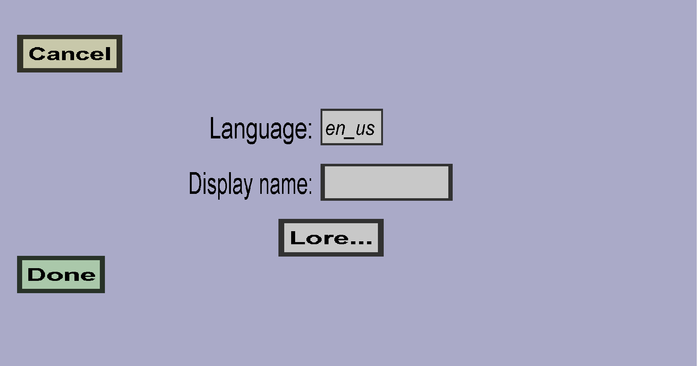

The translation edit menu can be used to define the translations of the display name and/or lore of 1 custom item in 1 language. It should look like this:
The language for which you want to provide a translation. It should be in the form language_region, for instance en_us.
The display name that should be shown to players who speak Language.
The lore that should be shown to players who speak Language. If you leave the lore empty, the regular lore of the item will be shown to all players. Keep the lore empty if you wish to show durability and/or gun ammo in the lore.